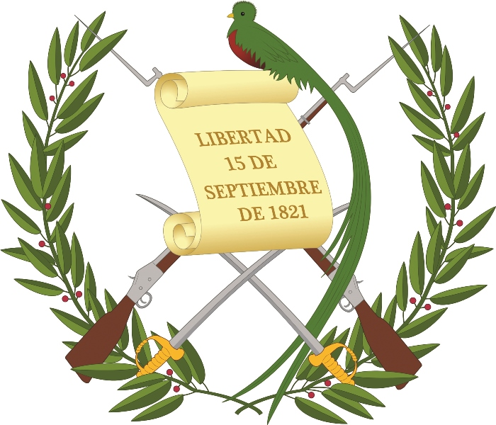

Símbolos patrios
Bandera Nacional
Escudo Nacional
Árbol nacional
La Ceiba

La historia de Guatemala es la cronología de sucesos acaecidos desde el comienzo del primigenio poblamiento humano en el actual territorio de la República de Guatemala hasta nuestros días. Esta comienza con los primeros grupos de personas en habitar la región, de las que se destaca la civilización maya.
Los conquistadores españoles llegaron a Guatemala en 1523. Hernán Cortés nombró a la ciudad de Guatemala, en su carta de relación dirigida a Carlos V, fechada en México el 15 de octubre del 1524. Cortés se refiere a «unas ciudades de que muchos días había que yo tengo noticias que se llaman Ucatlán y Guatemala». La región pasó a formar la Capitanía General de Guatemala, adscrita al Virreinato de la Nueva España.
En el siglo xix, los criollos de la Capitanía General de Guatemala lograron su independencia del Imperio español y la región pasó a llamarse Federación Centroamericana, la cual se anexó un tiempo al imperio de Agustín de Iturbide en México. Tras la separación de México se iniciaron las guerras entre los conservadores —es decir, los criollos de mayor abolengo y que vivían en la capital de la federación, conocidos también como Clan Aycinena, y el clero regular de la Iglesia católica— y los liberales, que eran criollos de menor categoría que se dedicaban a la agricultura a gran escala y vivían en el resto de la Capitanía General. La lucha dio lugar a la desintegración de la Federación Centroamericana, de la que emergieron las cinco repúblicas de Centro América, entre ellas la actual Guatemala.
Un Estado de la Federación Centroamericana gobernado por conservadores como Mariano Aycinena y luego por el liberal Mariano Gálvez, la moderna República de Guatemala se fundó el 21 de marzo de 1847, durante el gobierno conservador del general Rafael Carrera, y de esta forma empezó a tener relaciones diplomáticas y comerciales con el resto de naciones del orbe. Bajo el mando de Carrera, Guatemala resistió todos los intentos de invasión de sus vecinos liberales.
En 1871, seis años después de la muerte de Carrera, triunfó la Reforma Liberal y se establecieron regímenes liberales de corte dictatorial. El café se convirtió en el principal cultivo del país. En 1901, durante el gobierno del licenciado Manuel Estrada Cabrera, se inició la intromisión en los asuntos de estado de corporaciones norteamericanas, comoUnited Fruit Company (UFCO), la principal empresa del país. Guatemala pasó a convertirse en una República bananera, en donde los gobernantes eran colocados o retirados por la UFCO, dependiendo de las necesidades económicas y de los que obtenía considerables concesiones. En 1944, en medio de la Segunda Guerra Mundial, se produjo la revolución de octubre, la que derrocó al régimen militar de entonces e inició diez años de gobiernos electos que intentaron oponerse a la frutera e imponer reformas sociales, pero fueron derrocados en 1954 cuando los intereses de la UFCO se vieron afectados por dichas reformas. La contrarrevolución de 1954, mantuvo algunas de las reformas de los regímenes revolucionarios, incluyendo la dignificación del Ejército, pero volvió a proteger los intereses de la frutera norteamericana, aduciendo que los regímenes revolucionarios eran comunistas. En 1960, en el marco de la Guerra Fría, se inició la guerra civil y un período de inestabilidad política, con golpes de Estado y elecciones fraudulentas. El conflicto armado dejó un saldo de más de 250.000 víctimas —entre muertos y desaparecidos— según datos de la Comisión para el Esclarecimiento Histórico, según la cual más del 90 por ciento de las masacres fueron cometidas por el Ejército de Guatemala y los grupos paramilitares progubernamentales. Tras la transición a un sistema democrático en 1985, y luego de extensas negociaciones con la guerrilla, se logró firmar los Acuerdos de Paz en 1996, empezó una nueva época en Guatemala.
108.888 km²